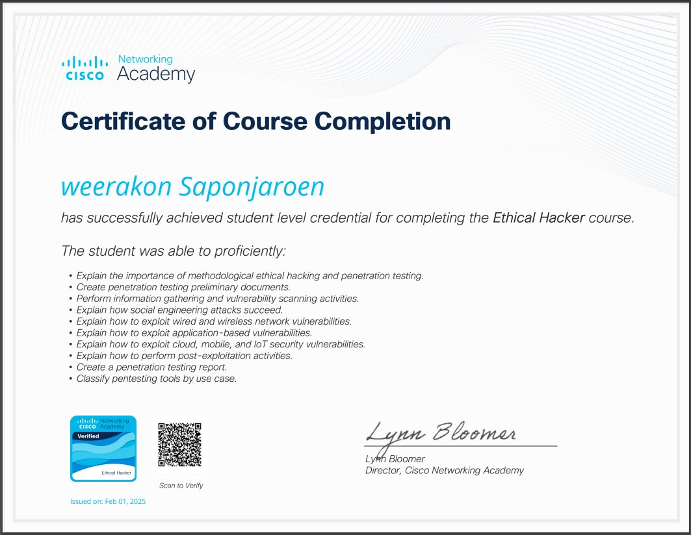

Certificates


เป้าหมายในอนาคต
ผมต้องการเป็นบุคลากรด้านเทคโนโลยีที่ไม่หยุดพัฒนา พร้อมเรียนรู้เทคโนโลยีใหม่ ๆ อยู่เสมอ เช่น AI, Cloud, และ Cybersecurity เพื่อเพิ่มคุณค่าให้กับตัวเองเเละต่อยอดสู่การเป็นผู้เชี่ยวชาญด้าน IT ในอนาคต